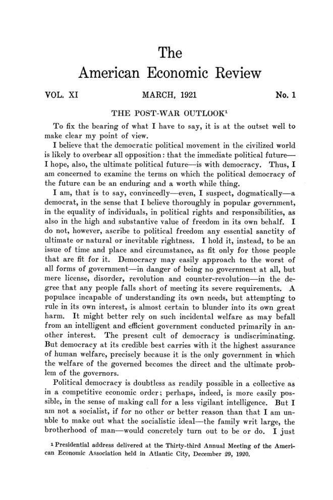

Davenport, 1920: a dívida de guerra e o futuro da democracia
Leitura: 7 min
No discurso presidencial de 1920, Davenport argumenta que a guerra foi paga com a produção corrente, mas que a dívida em títulos estratifica a riqueza e ameaça a democracia; propõe retirá-la por impostos.


Em 29 de dezembro de 1920, em Atlantic City, Herbert J. Davenport, da Cornell University, fez o discurso presidencial da trigésima terceira reunião anual da American Economic Association. Escolheu um título modesto, a perspectiva do pós-guerra, e um tema que vai muito além das finanças: as condições em que a democracia política que, a seu ver, se aproximava pode durar. O argumento passa pela dívida de guerra, e o número que o resume é de escala mundial: 250 bilhões em dívidas de guerra.
Onde Davenport se coloca?
Davenport começa definindo seu ponto de vista. É democrata, quase dogmaticamente, diz: crê no governo popular, na igualdade dos indivíduos e no valor da liberdade. Mas não atribui à liberdade política nenhuma santidade natural; ela depende do tempo, do lugar e das circunstâncias. E não é socialista, entre outras razões porque não consegue imaginar o que o ideal socialista faria concretamente.
Defende a concorrência, mas regulada. O maior perigo para a ordem competitiva, afirma, são os seus defensores que resistem a qualquer mudança. Liberdade e coerção são princípios bons, cada um em seu lugar, e o problema de governo é ajustá-los: onde o ganho individual coincide com o bem comum, como no plantio do milho, o Estado pode ficar de fora; onde conflita, é a esfera da regulação. Laissez-faire sistemático e coletivismo sistemático lhe parecem igualmente sonhos de lógicos.
Daí uma proposta de método político: concentrar o esforço nas medidas próximas em que reformadores de escolas diferentes concordam. Socialistas e defensores do imposto único deveriam adiar a disputa sobre os fins enquanto concordarem em condenar a propriedade privada dos recursos naturais. Ele próprio defende impostos sobre heranças e impostos progressivos para conter a estratificação econômica, justiça gratuita e escolas gratuitas, não por ser socialista, mas para preservar a ordem competitiva.
“Peço radicalismo para fins conservadores, um conservadorismo progressista.” (“I plead for radicalism to conservative ends, for a progressive conservatism.”)
Por que democracia política exige democracia econômica?
A sociedade que Davenport toma como ideal é a da igualdade competitiva: desigualdade limitada às diferenças de capacidade e de realização individual, sem privilégios nem oportunidades herdadas. Uma sociedade competitiva que se estratifica, transmitindo de geração em geração as vantagens que surgem em cada uma, está, diz, gravemente doente, tanto pelo teste do seu valor quanto pela promessa de durar.
Ele admite que essa convicção tem algo de ato de fé. Mas acrescenta um argumento de fato: a democracia política está chegando, e uma democracia política não convive por muito tempo com uma aristocracia econômica. Uma das duas acabará por perecer. Planejar ao mesmo tempo para a concorrência e para a aristocracia é pôr ambas em risco.
Quem pagou a guerra, e quando?
O núcleo econômico do discurso parte de uma tese: a guerra não empobreceu o mundo, pela simples razão de que não podia. As guerras são sustentadas pelo produto corrente. A pobreza das dívidas públicas é uma falácia, exceto quando o credor é estrangeiro; num inventário nacional, as dívidas internas se cancelam, e num inventário mundial desaparecem também as externas. A miséria da Europa, diz, vem da paralisia da indústria corrente, não da destruição dos recursos.
Nenhum empréstimo e nenhum imposto torna disponível hoje um produto futuro. Davenport cita Sir Thomas Browne, sobre quem teria de vestir a pele de um urso ainda não abatido. Empréstimos e impostos tiram da mesma fonte, a renda presente; o imposto termina num recibo, o título começa uma redistribuição da renda futura, garantida por um direito sobre ela. Quem pode comprar títulos pode pagar impostos.
A escolha real, portanto, não era entre impostos e empréstimos de um lado e inflação de outro. Era entre impostos e inflação. Nenhuma taxa de juros crível atrairia a restrição de consumo necessária para uma grande guerra, e juros altos o bastante provocariam uma reavaliação desastrosa de propriedades e títulos. Tomar emprestado em grande escala significava seguir o método da inflação, com bancos carregando os títulos. Com as alíquotas inglesas, acredita, os Estados Unidos não precisariam de nenhum dos dois tipos de empréstimo.
Por que a dívida é o efeito que não passa?
Como a guerra foi financiada principalmente pelo método inflacionário dos títulos, o mundo enfrenta uma situação nova. A dívida também impede a deflação: as emissões de títulos hipotecaram a política monetária. E há a questão de quem paga a quem. Nenhuma geração pode pagar senão a si mesma; serão apenas os netos de alguns que receberão à custa dos netos de outros.
Os títulos foram em boa parte comprados com margens de lucro criadas pela inflação. As massas que pagaram uma vez essas margens pagarão depois, em impostos, os juros e o resgate. Davenport diz não acusar ninguém de má intenção: faltou compreensão, e os próprios economistas, ocupados com os problemas da paz, não tinham pensado nos fundamentos das finanças de guerra. Se a necessidade de recrutar a renda corrente tivesse sido entendida, acredita, o país teria aceitado os impostos como aceitou o serviço militar obrigatório.
O exemplo externo é a paz com a Alemanha. A dívida interna alemã, de 40 bilhões em títulos, garantia aos credores uma renda de 2 bilhões de dólares por ano paga pelos contribuintes, e os aliados acrescentaram a ela dívidas externas. Para Davenport, a Alemanha dificilmente chegaria à democracia sem algum tipo de repúdio.
Quase tudo da guerra, diz, passará com os anos: os ressentimentos, as injustiças da inflação, até o luto. Não passará a estratificação da riqueza. As dívidas não morrem com os indivíduos.
Como retirar a dívida?
A pergunta final é como as massas, numa sociedade em que o poder está distribuído como está, podem ter êxito sem revolução. A resposta de Davenport é que a mudança virá pela compreensão crescente das classes que detêm esse poder. A primeira tarefa da política é retirar as dívidas: reivindicando para a sociedade os incrementos futuros de valor, por impostos sobre a renda e as heranças, por impostos especiais muito altos sobre as atividades de intermediação e, se preciso, como na Europa, por tributação do capital.
Deixar correr os efeitos da guerra, adverte, custará a todos mais em agitação social, queda do moral do trabalho e radicalismo destrutivo do que uma solução corajosa agora. E encerra com uma regra de responsabilidade entre gerações: cabe a cada geração proteger, e não comprometer, os recursos e as liberdades das que virão.
Na minha leitura
Na minha leitura, o discurso combina duas teses que costumam ser separadas. A primeira é de contabilidade nacional: uma guerra se paga com o produto do presente, e a dívida não transfere o custo real para o futuro, apenas decide quem receberá e quem pagará depois. A segunda é de economia política: essa redistribuição futura não é neutra, porque concentra direitos sobre a renda em quem pôde comprar os títulos, muitas vezes com lucros da própria inflação.
O que me parece valioso é a insistência em que a escolha de financiamento tem efeitos distributivos duradouros, e não só efeitos sobre preços. A proposta de retirar a dívida por impostos progressivos e sobre heranças é discutível em cada detalhe, mas a pergunta de fundo, quem acaba credor e quem acaba contribuinte depois de uma despesa extraordinária, continua a ser a pergunta certa.
Glossário
- Imposto único (single tax)
- proposta de Henry George de tributar apenas o valor da terra.
- Estratificação econômica
- transmissão de vantagens econômicas entre gerações, que fixa as posições sociais.
- Financiamento inflacionário
- pagamento de despesas públicas com títulos carregados pelos bancos, que ampliam o crédito e elevam os preços.
- Tributação do capital (capital levy)
- imposto extraordinário sobre o patrimônio, cobrado uma vez para reduzir a dívida pública.
- Guild Socialism
- corrente britânica que propunha a gestão das indústrias por associações de trabalhadores.
Fontes
- The Post-War Outlook — Herbert J. Davenport (Cornell University) (pp. 1–15). JSTOR · Internet Archive (PDF)
- Edição completa, com os demais artigos: Nº 168 do Arquivo.
Documento em domínio público (EUA, publicado antes de 1931), via JSTOR Early Journal Content e Internet Archive. Resumo e comentário do autor deste site, sem afiliação com a American Economic Association. Encontrou um erro? Escreva: a correção é publicada no próprio texto, com data.
↑ Nº 168 · A taxa de desconto, a dívida de guerra e o produto medido em toneladas Sprague, 1920: o que deve guiar a taxa de desconto do Federal Reserve →